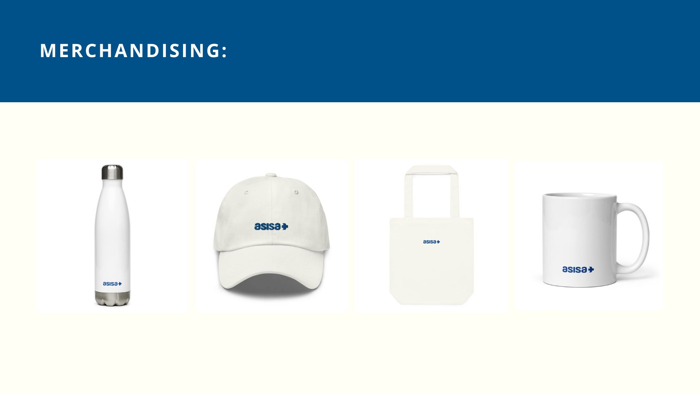
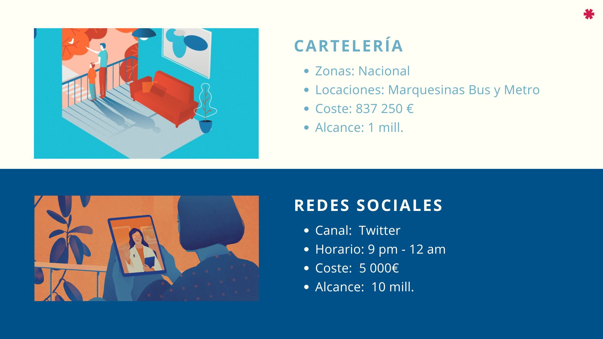
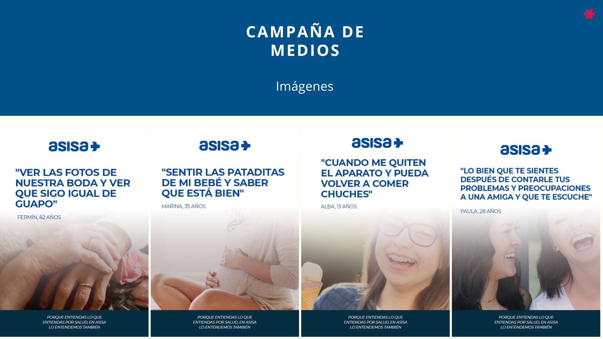
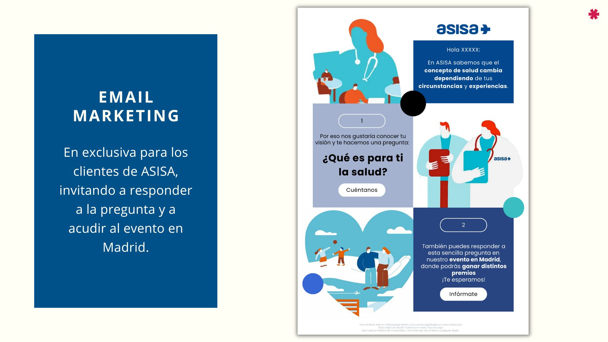
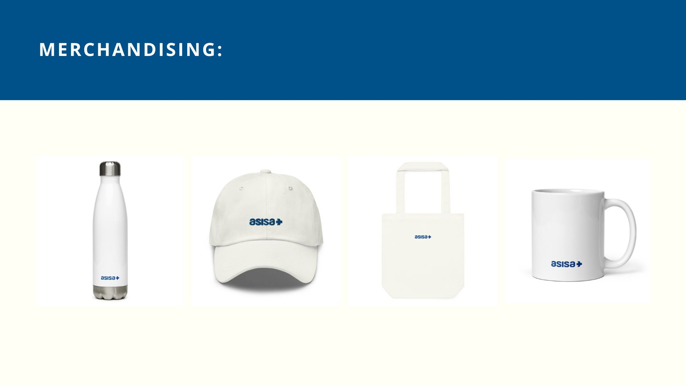
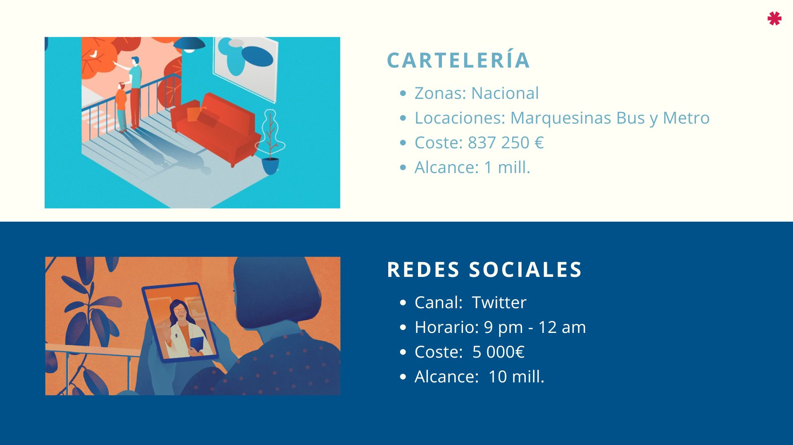
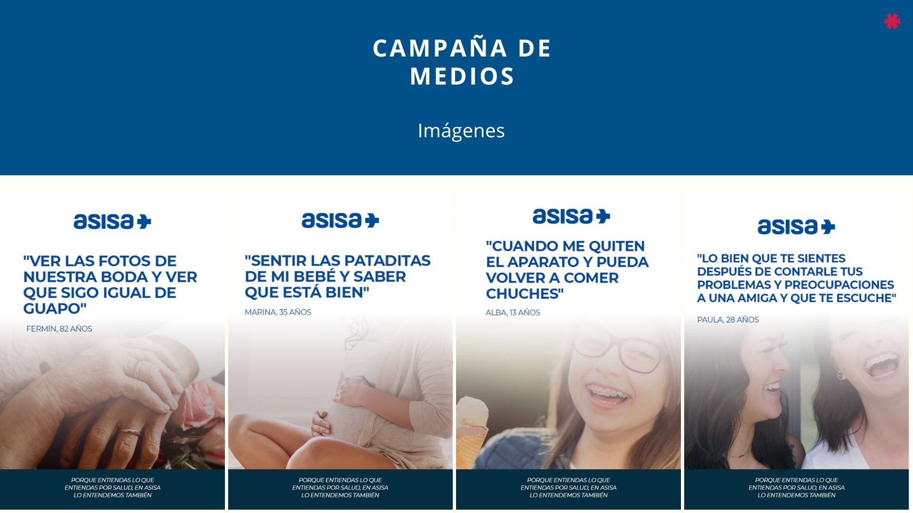
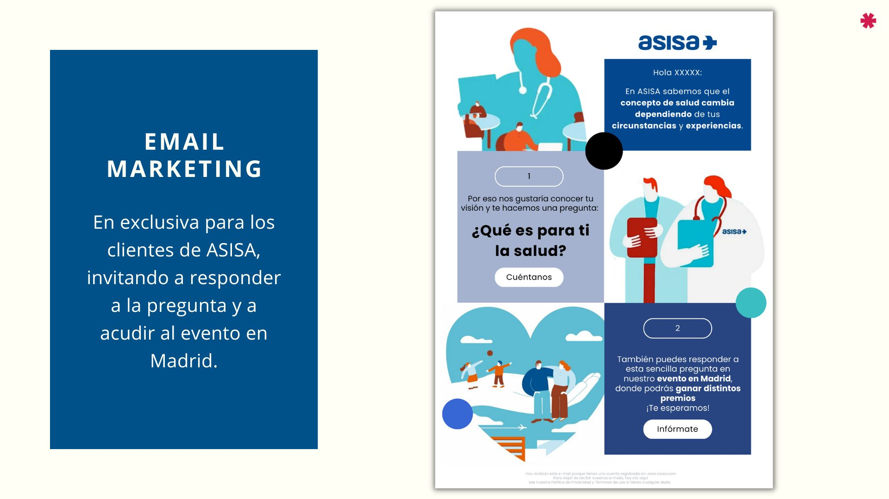

Humanizando los Seguros de Salud
La campaña "Mejor Así" nació de la necesidad de diferenciar a Asisa en un mercado saturado. El proyecto se dividió en dos etapas: una fase de escucha activa (evento presencial en Madrid) y una fase de amplificación masiva utilizando el contenido generado por los propios usuarios.
Planificación de Medios de Alto Impacto
Mi labor se centró en la selección táctica de canales para la Etapa 2, coordinando una inversión en Exterior (Cartelería Nacional), Twitter, Radio y Televisión, con el objetivo de elevar el recuerdo de marca al 35%.
 






